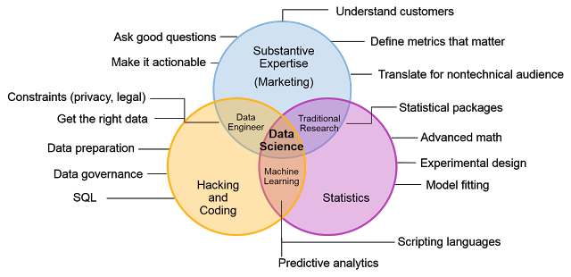

Y is for You Should Talk to Your Clients
Many of the previous blogs in this series have focused on the more technical aspects of data science like training models and measuring performance. In all real world data science projects, you’ll need to do more than just the technical aspects. Unless you’re doing it to learn (a perfectly valid reason!), we typically aren’t doing data science for the sake of doing data science. We don’t want to spend tons of time and effort on a data science project, just to have it dropped on the floor or ignored. It’s crucial to communicate with everyone involved in your data science projects to increase the chances of your projects being adopted/recognized.
Data science is a team sport
Data science involves a wide range of skills and expertise, especially in large projects. You need people who can [munge data]../2020-10-10-m-is-for-munging-data/index.qmd, train models, and have subject matter expertise in the specific problem domain. For large projects, you’ll want people with software engineering experience to help you build maintainable code and systems. The traditional Venn diagram for describing data science comes from Drew Conway.

It’s pretty unlikely that one person is an expert in all of these fields (which is why they are referred to as unicorns!). Successful data science projects usually need input from a variety of people. A more accurate Venn diagram might look like

Clearly there is a lot to get right for a successful data science project. In my experience, people tend to focus on the more technical aspects and ignore the customer/client angle. There are a lot more resources for the data preparation and model training parts of this Venn diagram. It’s also important to understand the marketing angle.
Marketing your work
It’s important to communicate with the people who are going to actually use the models that you’ve built. People won’t just use your models for no reason, they actually need to be useful. Here are a few things to keep in mind when trying to make sure the project you’re working on is useful. You should talk to your clients (either internal or external) to figure out the problems that they need solving.
Understand their workflow
Talk to experts in the problem domain that you’re working in. These could be doctors, business analysts at your company, or just some trusted friends/family. Try to understand what the pain points are in their workflow and figure out ways that you might be able to help solve it. Machine learning works best on specific, well-defined problems. Talking to experts can help you pinpoint these specific problems. Saying I’m going to train a machine learning model to look at MRI images for a specific disease is a more achievable goal than saying “AI/ML for medicine”. You should make sure that everyone is on the same page and using the same language. Additionally, trust the expertise of the people you are talking to! You don’t want to be this person

Manage expectations
It’s possible you’ve been tasked by your management to “use machine learning”. You should also know by now that machine learning/AI is not magic. For people who are less familiar with the field, it can be hard to tell what is doable or still an active area of research. It’s really important to be honest about what is realistically achievable. You should also make it clear if the tools you are developing are intended to take automated actions, or help humans make better decisions. Fit into their workflow If possible you should try to avoid building shiny new tools to display your model results. People typically have workflows and existing tools that they are comfortable with. You should try to fit your model results into these tools (or at the very least link your tool from the existing ones).
Communicate early and often
As the project progresses, you should update your clients with any results that you’ve found. You should also ask for their input regularly. For example, if you hear them saying “why did the model make THAT prediction?” you might want to focus on more interpretable models. It can be very helpful to have a small group of trusted clients who are closely involved with the process. Management or software engineering teams might be familiar with Agile software development as a way to manage projects. There are some good parts that can be adapted for data science projects. Linear Digressions did a good two part series on Agile for Data Science, talking about the good and adjustments that should be made. Be clear in what you are asking for feedback on. If you are looking for feedback on the way you are displaying results (as compared to the results themselves), make that obvious!
Summary
Data science involves a lot of skills and no one can do it all. We tend to focus on the technical parts of the data science pipeline, but communication and marketing are crucial skills. A person with domain expertise and the ability to communicate with end users and other data scientists is as valuable as the people training the models and preparing the data.